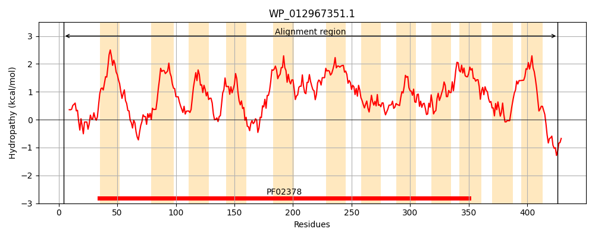
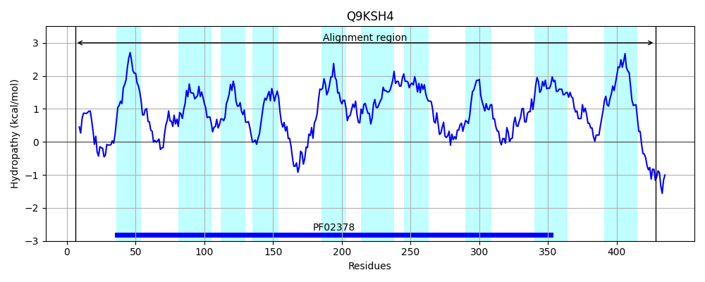
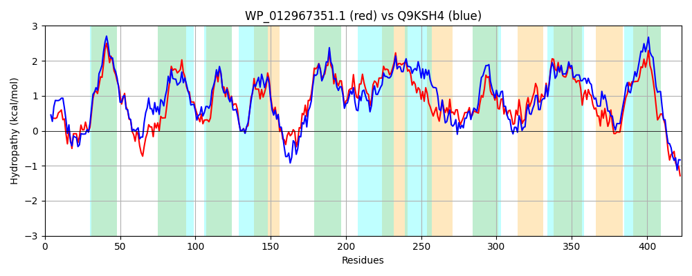

Hit Accession: Q9KSH4
Hit TCID: 4.A.3.2.6
Hit Description: gnl|BL_ORD_ID|18398 gnl|TC-DB|Q9KSH4|4.A.3.2.6 PTS system, cellobiose-specific IIC component OS=Vibrio cholerae GN=VC_1282 PE=4 SV=1
Mach Len: 423
e:0.000000
Query TMS Count : 12
Hit TMS Count: 10
TMS-Overlap Score: 7.900000
Predicted Substrates:None
BLAST Alignment:
Score: 1329 , Bit scores: 516 bits, E-value: 0.0e+00, Alignment length: 423, Percentage identity: 54
Query: 4 LYAKLIDVIERQITPMAGAIGQQKYVTSIRDGFITALPFMIVGSFLLVFIFPPFSPDTTWGFARAWLQFSLDHRDALMLPFNFSMGVMTLFIAVGIAASLAKHHHLDSLTAGMLSLMSFLLVAAPLKDGQISTAYFSGQGIFTAILVAIYSTELYAFLKRHNITIRLPPEVPAGVARSFEILIPVLAIILTLHPLNLFIEAQLGMIIPEAIMSLVKPLVAASDTLPAILLSVLVCQVLWFAGIHGALIVTGIMNPFWMANLSVNQAAMAAGTAIPHIYVQGFWDHYLLIGGVGSTLPLALMLLRSKAVHLRTIGRMGVVPGVFNINEPILFGAPIIMNPLFFLPFVLVPMVNATLAYFALKLDLVSRVVSMTPWTTPAPIGASWAANWSFSPVILCLICMATSMVMYLPFLKAYEKQLLAQER 426
LY +I ++E+ I P+A +G Q +V ++RDGFI A+PF+IVGSF+L+F FPPF+ DTT F R WL F+ H D +M+PFN SMG+MT+F+++G+A SLAK + +D +T+ +LSLMSFLLVAAP K+ +S A+ G GIFTA++ A ++ ELY F+K+HNITIR+P +VP +ARSFE+L+PVLAI LTL+PL+LF++A+ GM+IP+A+M++ KPL++AS+TLPAI+ ++LVCQ+LWFAGIHGA IV G+++P ++ N+S N A G +P+I+ Q FWD Y+ IGG G+TL L +++ S++ HL++IGRM VPG F INEP++FG+P++MNP+ FLPFV P++NAT+AYFA++L V V+ TPWTTPA IGASW + W+F+PV+L + + +++YLPF K +EKQ+L QE+
Sbjct: 6 LYDAIIGIVEKHIAPIAAKVGNQPHVRAMRDGFIVAMPFIIVGSFILIFAFPPFAEDTTNVFGRVWLNFATTHFDIIMMPFNMSMGIMTIFVSLGVAYSLAKAYKMDGITSAVLSLMSFLLVAAPAKEDSLSMAHMGGTGIFTAVMCAFFAVELYRFMKKHNITIRMPEQVPPAIARSFEVLLPVLAIFLTLYPLSLFVQAEYGMLIPDAVMAMFKPLISASNTLPAIIGALLVCQLLWFAGIHGAAIVVGLLSPIFLTNISANIDAFVTGQPVPNIFTQPFWDFYIFIGGSGATLALVILMSFSRSAHLKSIGRMSAVPGFFQINEPVIFGSPVVMNPILFLPFVFAPVINATIAYFAIQLGFVGMGVATTPWTTPAIIGASWGSGWTFTPVLLVVGLLILDLLIYLPFFKMFEKQVLEQEQ 428 | Protein Hydropathy Plots: |
|---|
|  |  |
Pairwise Alignment-Hydropathy Plot:
|
|---|
|  |